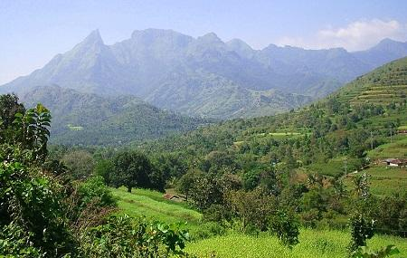

Palakkad
Palakkad is one of the fourteen districts of Kerala and has no coastal line. The district opens the state to the rest of the country through the Palakkad Gap with a width of 32 to 40 Kms. Its geographical position, historical background, educational status, tourism hot-spots and above all, the development activities that are carried out, are wide and varied. The district is one of the main granaries of Kerala and its economy is primarily agricultural. The district is also the land of Palmyrahs. The present Palakkad district, as an administrative unit,was formed on the first of January 1957, comprising of Palakad, Perinthalmanna, Ponnani, Ottapalam, Alathur and Chittur. Later when the Malappuram District was formed excluding Thritala firka of Ponnani Taluk, Mankada firka and excluding Karkidamkunnu & Chetalloor amsoms of Perinthelmanna Taluk are transferred to that district and a new taluk was formed namely Mannarkkad. In 2013, Ottapalam taluk was bifurcated and Pattambi taluk was formed.
Top Destinations
Parambikulam Tiger Reserve
Parambikulam Tiger Reserve, which also includes the erstwhile Parambikulam Wildlife Sanctuary, is a 391 square kilometres protected area in Kollengode Block, Chittur taluk in Palakkad district of Kerala state, South India. The wildlife sanctuary, which had an area of 285 square kilometres was established in 1973. Considering its biological richness, abundance of wildlife and landscape beauty makes Parambikulam Tiger Reserve in one of the most attractive place in the entire Western Ghats

Nelliyampathy
Nelliyampathy is a hill station within the Nelliyampathy Forest Reserve, in the southwest Indian state of Kerala. The road to it, which goes through the dense forests of the Western Ghats, is known for its many hairpin turns. A steep drive with 23 dizzying, hairpin bends, brings you to Nelliyampathy, a hidden, misty hill station, nestled in the middle of the Nelliyampathy Forest Reserve. Part of the Sahyadri Range, this Nelliyampathy hills are home to rich in coffee, tea and orange plantations, has a 19th-century dam, and is surrounded by shimmering waterfalls.
Attapadi Reserve Forest
Attapadi Reserve Forest is a magnificent forest reserve and is regarded as one of the protected areas of India. It acts as a buffer zone that borders silent valley national park situated at the western part. This reserve serves as a perfect place for the adventure lovers and has a huge collection of birds. As you walk along the roads, you will find seasonal plantations like onion, nuts, and also grasslands and barren hills along with tribal settlements. If you are lucky enough, then you might meet the elephants. The wonderful views of the Attapadi hills are sure to enrich your sojourn. Siruvani waterfalls and silent valley national parks at Attapadi Reserve Forest are worth visiting.